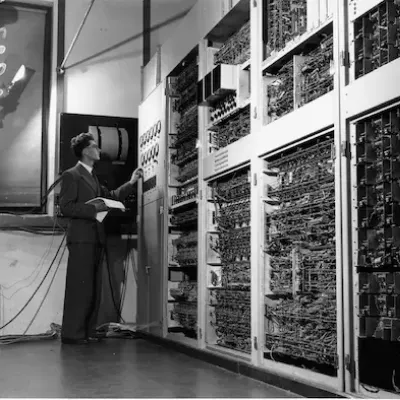

Foto (01) / Roskilde Festival

Foto (02) / København
Portræt–
Helene Jerichow
Omdahl

Foto (03) / Lejlighed


Hej, jeg hedder Helene – Digital designer
Jeg hedder Helene Jerichow Omdahl, og til dagligt studerer jeg Multimediedesign på
Københavns
Erhvervs Akademi.
Jeg er en kreativ sjæl på 22 år, som elsker at nørkle med mange forskellige former for
digital
design.
Læs mere om mine kompetencer forneden!
Foto (04) / Efterskole kreation

Foto (05) / Efterskole kreation
Mine kompetencer
På min uddannelse arbejder jeg med at udvikle færdigheder inden for digitalt design,
programmering,
brugeroplevelse og
kommunikation.
Uddannelsen giver mig en bred vifte af værktøjer til at skabe og formidle visuelt og
interaktivt
indhold, der
imødekommer moderne digitale behov.
Jeg har specialiseret mig i Adobe-programmerne som After Effects, Illustrator, Photoshop og
Premiere
Pro.
Her har jeg lært at kombinere dem med kodning i programmet Visual Studio Code samt
designprocesser
til at udvikle funktionelle og æstetiske hjemmesider og digitale løsninger.
Foto (06) / Udstilling i Mexico
CV
Højer Designefterskole 2018-19
Før jeg startede i gymnasiet, havde jeg et stærkt behov for at udfolde min kreative passion.
Derfor
valgte jeg at tage
et år på Højer Designefterskole i 2018-2019, hvor jeg udviklede en bred vifte af digitale
kompetencer.
Jeg var en del af både Foto/SoMe-linjen og design- og innovationsklassen. Her arbejde vi med
Adobe-programmerne, hvor vi
lavede alt fra photoshoots og grafiske plakater, til lasercuttede designs og kreative produktioner.
Året bød også på rejser til bl.a. Mexico City, Berlin, New York og Cape Town, hvor vi lavede
spændende projekter i
samarbejdede med fagfolk og lokale designskoler.
Nærum Gymnasium 2019-22
På Nærum Gymnasium valgte jeg linjefagene Musik- og Matematik A. Det gjorde jeg fordi, fagene begge
er meget
systematiske og kreative på hver sin måde.
Matematik og kreativitet går oftest hånd i hånd, hvilket Multimediedesign-uddannelsen i den grad
understøtter.

Foto (07) / Efterskole kreation